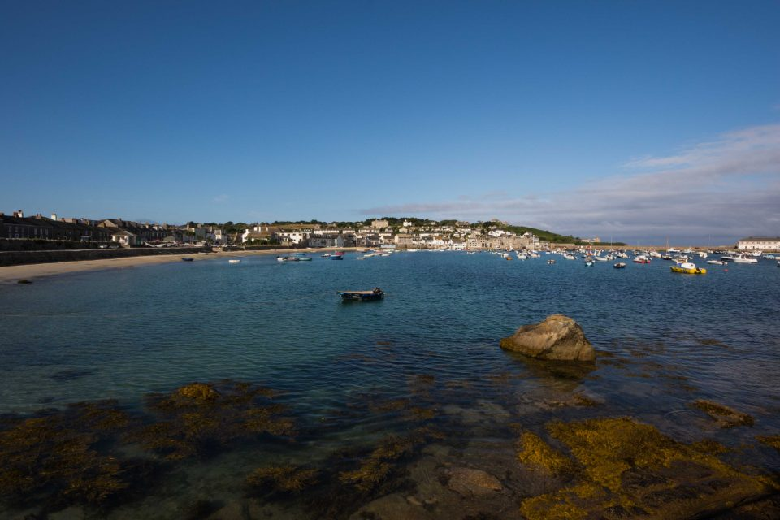
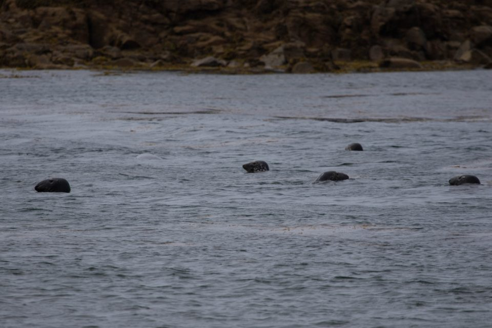

Scilly Isles, July 2015

After a year of planning, our club trip to the Scilly Isles began with the long drive from London to Penzance, with the Isles of Scilly another three hour ferry trip beyond. The process for loading dive kit and luggage sits somewhere between a jumble sale and a rugby match. As we’re a mostly organised club, we ended up with only my car on the wrong side of the chain that separated a deranged forklift truck from humanity.
The crossing was fairly calm, but the building swell soon revealed who had remembered their seasickness tablets. Olivia planned to revise for her Sports Diver exam – notes in one hand, sick bag in the other. At around question 18, the revision ended suddenly.
Hugh Town, on the island of St Mary’s, is beautiful. Our accommodation overlooked the neck of land connecting the “Garrison” to the main island. It wasn’t long before the lure of pasties, ice cream and a pub took hold..
We needed to be at the harbour for 8:30 the next morning to load our dive bags and tanks onto the dive boat, Moonshadow. There was a mad scramble to get everything on the boat, which was a little small for 12 divers, and the jumble sale theme returned as we climbed over a pile of tanks and kit, each of us trying to assemble a working set.
Throughout the week, we got to explore the different islands from the water. The diving was a little chilly (14oC) but fine for those in drysuits. The dive sites included wrecks, scenic reef dives and seals! Most of our dives were accompanied by Pollock, and every wall was covered in colourful jewel anemones. The visibility varied throughout the week, following the weather. Some days we could see the surface from 20m; on others, it was a respectable 5m. The wrecks were a mix of new and old, the Cita being the most intact. The Colossus is the most historic – wrecked in 1798, it comes complete with a guide-book to navigate around the historic site!

Jolene the skipper was great. She knew every nook and cranny of the islands and always found us somewhere to dive, whatever the weather. On one trip, she brought her children on board. They were more interested in Sarah B’s fluorescent three-eyed monster hat than us. Thankfully (for us), the hat found a permanent home in the Scillies.
We dined out most evenings, with the odd take away and meal in cooked at the accommodation. On the last night, we had an end-of-trip meal at one of our favourite restaurants. We each recounted our most memorable moments from the trip, which was a lovely way to round off the week.